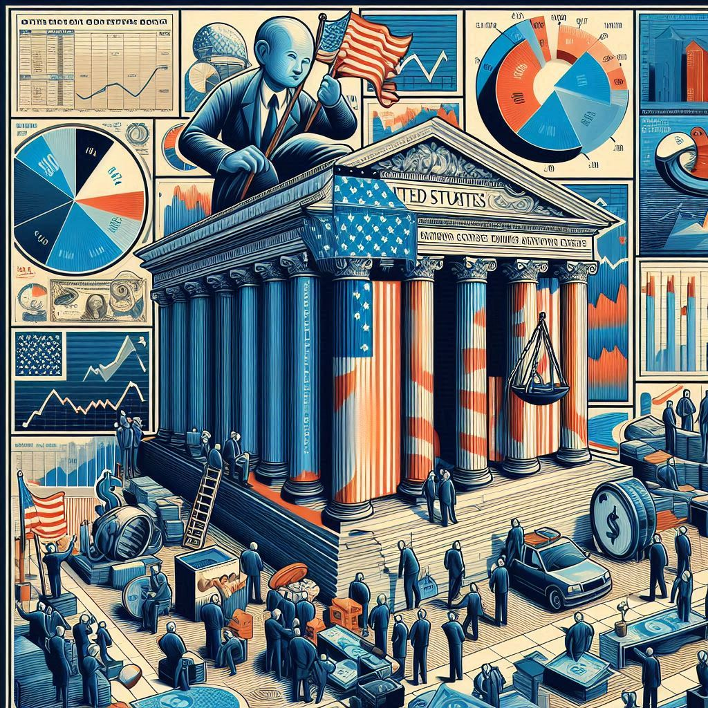

Projects

Decoding Treasury Yields: Insights from Principal Component Analysis
This project uses Principal Component Analysis to identify the hidden factors driving U.S. Treasury yields, offering insights into how interest rate changes specifically impact government yields for fixed-income investors.